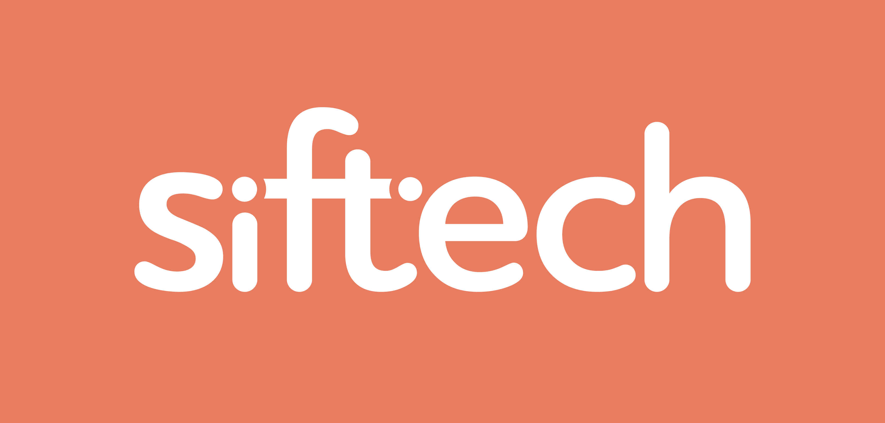
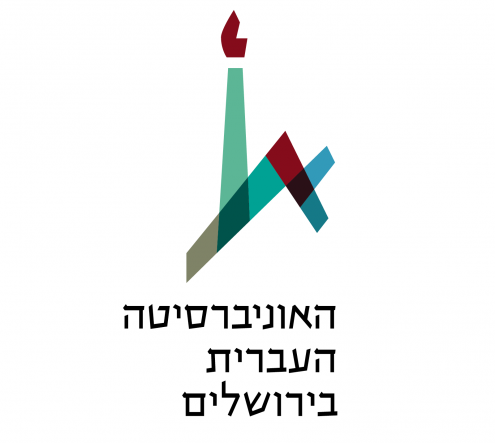
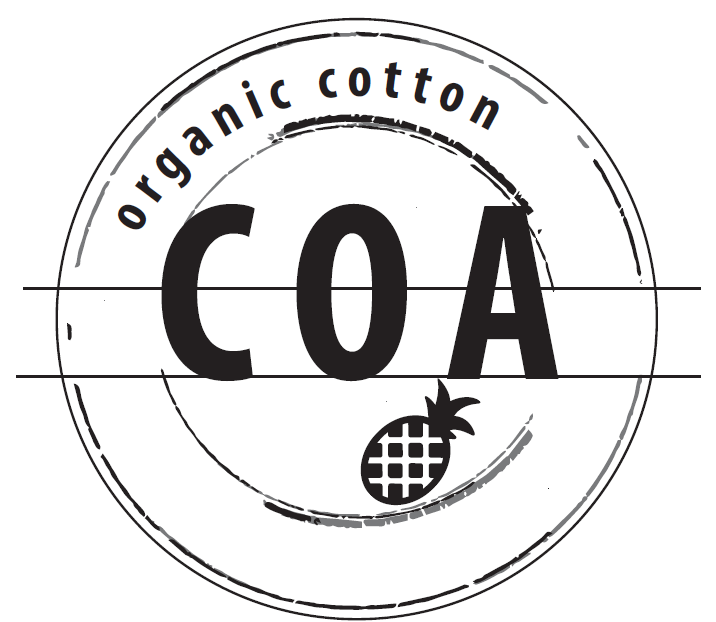
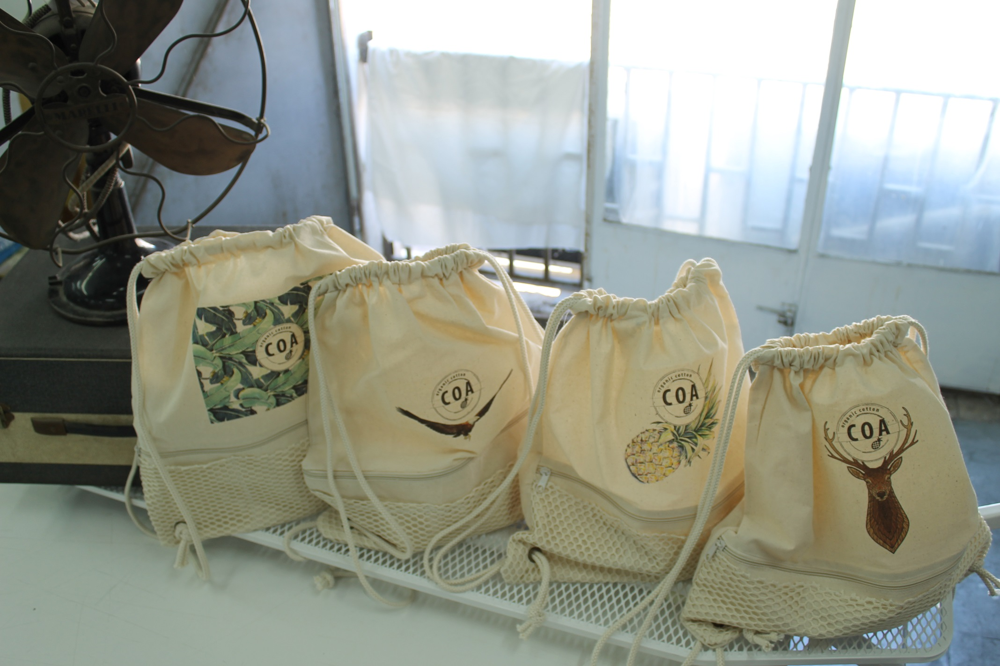
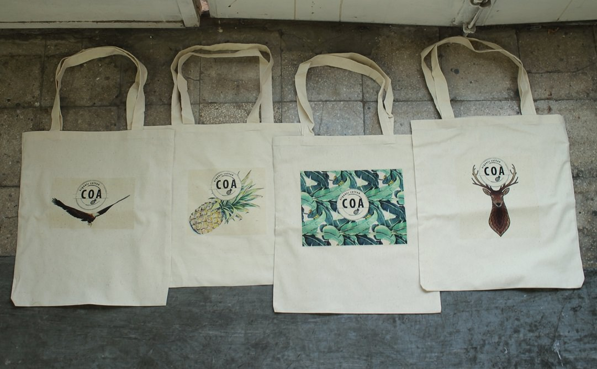
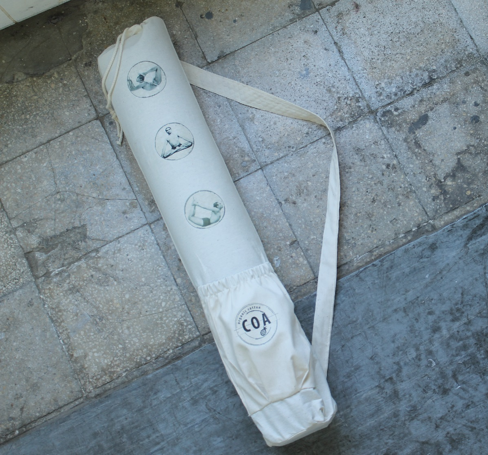
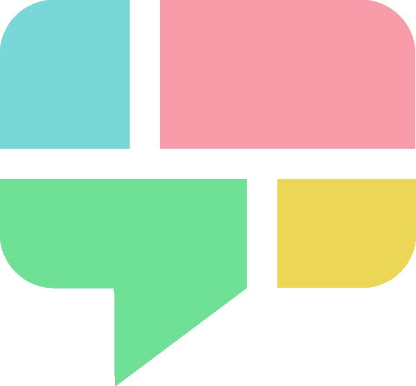
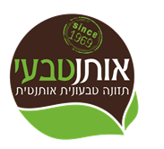

שלום עולם! Rails Girls מגיעה לראשונה לירושלים!
Rails Girls היא סדנה ללא תשלום שמטרתה לתת לבנות ולנשים את הכלים לבנות את הרעיונות שלהן באמצעות טכנולוגיה נחשקת בשם Ruby on Rails. במהלך הסדנה בת היומיים אנחנו נצלול אל תוך העולם הקסום של פיתוח אתרים.
Shalom world! Rails Girls is coming to Jerusalem!
Rails Girls is a free workshop aimed at giving girls and women tools to build their own ideas using a desired technology, Ruby on Rails. During the two day workshop we will dive into the magical world of web development.
את תלמדי לעצב, לתכנן ולתכנת בעזרתם של המדריכים שלנו.
את צריכה להביא את המחשב הנייד שלך, סקרנות וקמצוץ של דמיון!
רוצה לעזור? אנחנו מחפשים מדריכים/ות מתנדבים/ות. צרו קשר.
| 18:00 - 21:00 |
מסיבת התקנה + Try Rubyהכירו מעט את המשתתפות לפני הסדנא. הביאו את הלפטופים שלכן אם תוכלו, על מנת שנוכל להתקין בהם את סביבת העבודה, והתכוננו ללמוד שפת תכנות חדשה! |
|---|
| 8:30 - 09:15 |
הרשמה וקפהבמהלך הבוקר נסייע בהתקנה לאלו שעדיין לא סיימו להכין את סביבת העבודה על המחשב שלהן. |
|---|---|
| 9:15 - 9:30 |
דברי פתיחהתקציר היום וכמה מילים מהספונסרים שלנו. |
| 9:30 - 10:00 |
מבוא לפיתוח Webענבל גילאי, מייסדת ריילס גירלס ישראל |
| 10:00 - 13:00 |
סדנההתניעי את האפליקציה הראשונה שלך. |
| 13:00 - 13:40 | ארוחת צהריים |
| 13:40 - 14:45 |
הרצאות קצרות
|
| 14:45 - 16:25 |
סדנההרחיבי את האפליקציה שלך. |
| 16:25 - 16:35 |
סיכום היום |
מהו מחיר ההשתתפות בסדנה? הסדנה מוקדשת לכן באהבה ללא תשלום.
למי מכוונת הסדנה? הסדנה מיועדת לנשים בכל הגילאים עם ידע בסיסי בתפעול מחשב. עליכן להיות מצויידות בלפטופ.
האם גברים יכולים להשתתף? כן!
אני יודע/ת לתכנת - כיצד אוכל לעזור? אנחנו עדיין מחפשים מאמנים/ות לאירוע. אם מעניין אותך להיות מאמן/ת Rails Girls, צור/צרי קשר.
ההרשמה נסגרה. תודה (:
מיקום: האוניברסיטה העברית
Rails Girls תל-אביב-יפו מאורגנת ביחד בעזרת השותפים המדהימים שלנו. רוצים לעזור? אנחנו מחפשים שותפים וספונסרים עבור הארוע! כתבו לנו!
 GitHub is how people build software.
With a community of more than 10 million people, developers can discover, use,
and contribute to over 25 million projects using a powerful collaborative development workflow.
GitHub is how people build software.
With a community of more than 10 million people, developers can discover, use,
and contribute to over 25 million projects using a powerful collaborative development workflow.
 Siftech was founded in early 2012 as grassroots initiative of the Hebrew University Students Union. The idea was to create a vibrant ecosystem and environment for entrepreneurs and early-stage startups to flourish in Jerusalem. We started out as a community catalyst, organizing events and initiating projects aimed at driving entrepreneurial activity. Six months later, we launched the first startup accelerator in the city. As the nerve center of Jerusalem’s rapidly growing startup scene, we grow and support local entrepreneurial talent, providing the platforms, mentorship and business opportunities for young founders to create and succeed. Our long-term vision is to transform Jerusalem into a global hub of creativity and innovation.
Klarna נוסדה ב-2005 במטרה לספק פתרונות תשלומים מקוונים קלים ומהירים, אשר יאפשרו יחסי צרכן-סוחר בטוחים ופשוטים ככל האפשר. קלרנה עושה זאת בכך שהיא מאפשרת לצרכן לשלם עבור המוצר אותו קנה רק לאחר קבלתו, ותוך כך לוקחת על עצמה את הסיכון מיד הסוחר. כיום, קלרנה היא אחת החברות האירפואיות בעלות שיעורי הצמיחה המהירים ביותר: בתוך 8 שנים גדלה החברה וכיום היא מונה כ- 800 עובדים, ופועלת ב-7 שווקים שונים.
 בפקולטה למדעי הטבע קיימים חמישה מכוני מחקר, בית הספר להנדסה ומדעי המחשב ומספר רב של מרכזי מחקר: ננו-מדע וננוטכנולוגיה, ביולוגיה מבנית, ביו-גיאוכימיה ימית, כימיה קוונטית חישובית, אינפורמציה קוונטית, אנליזה מתמטית, דינמיקה מולקולרית ועוד. שני מרכזי מחקר בינתחומיים משלבים מסלולי לימוד לתואר דוקטור: חישוביות עצבית וחקר הרציונליות. הפקולטה שותפה לשלש תוכניות לימודים רב-פקולטאיות לתארים מתקדמים (סביבה, הידרולוגיה, וביו-טכנולוגיה). המציאות החדשה של המחקר הבינתחומי הניעה אותנו לפתח מסלולים משולבים של לימודי הסביבה, כימיה-פיסיקה, כימיה-ביולוגיה, ביולוגיה חישובית וביולוגיה-פסיכולוגיה. כמו כן יש בפקולטה תוכניות לתלמידים מצטיינים. תוכניות הלימודים לבוגר שלנו מתוכננות לאפשר לסטודנט לבחור האם להתמקד בנושא מסוים כבר בתחילת לימודיו או לחילופין, להחליט על כך רק בתום השנה הראשונה. שנת הניסיון הראשונה במדע מתוכננת לעזור להתאקלמות באוניברסיטה ולהחלטה על הכיוון המדעי הרצוי. אנו משתמשים במגוון שיטות הוראה כדי לפתח יכולות חשיבה, תכונות אישיות ויכולות תקשורת עם אחרים והתנסות בעבודה בקבוצות מחקר.
Our mission: Bringing more app ideas to life We call it the seed funding paradox. Investors require user traction and metrics, while what’s needed to gain those, a minimal viable product - MVP - is out of reach of many early stage startup teams. Actually, financing the product development was the main reason the startup was raising seed at the first place… App U Go is presenting a revolutionary concept: MVP as a Service. We offer production-level MVPs, fully developed in Israel, at a setup cost starring at $6,000 - a fraction of the current market cost, and well within most teams own resources. With a product, users and field experience the chances to raise funds at a better valuation - or just bootstrap all the way to a profitable business - becomes much more realistic.
 COA הוא מותג תיקים המיוצרים מכותנה אורגנית ההופכת אותם לחזקים יותר וידידותיים לסביבה. כל תיק מיוצר בעבודת יד ובישראל ובאהבה גדולה. ניתן להזמין דרך האינבוקס בדף הפייסבוק COA או דרך האימייל שלנו.
  
 Webbing Labs Ltd. is a fast-growing software development company located in Jerusalem that provides specialized services for clients in the fields of text analysis, machine learning, and speech recognition. In addition to our consulting services for clients, Webbing Labs also develops its own consumer and business products that aim to improve the flow of information on interest-based networking platforms.
 במאה הזו מתחוללת המהפכה אולי החשובה ביותר בהיסטוריה, בכל הקשור לתזונה בריאה ונכונה. בזמן שתעשיות מזון בעולם כולו מרעילות אותנו במזון, שכולו חומרים מסוכנים לבריאות האדם, מתרחשת מהפכה טבעונית אותנטית, מהפכה שמצטרפים אליה מיליוני בני אדם ברחבי העולם כולו. המזון הטבעוני האותנטי מבוסס על מזון מן הצומח ומחקרים מקיפים בעולם כולו מראים שהבחירה במזון זה מבטיחה דרך לבריאות, חוסן גופני ואריכות ימים. חברת אותנטבעי, שמייסדיה הם מבני הקהילה העברית וממחוללי המהפכה מגישה לכם אוכל טבעוני אותנטי, טעים, בריא ומקורי שיהפוך את התזונה שלכם לטעימה ובעיקר בריאה. כולם תרים אחר סוד הבריאות ואריכות הימים. אנחנו מגישים לכם אותו...